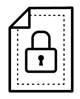

Infosecurity Europe 2018
| Cloud Automation |
Malduino USB - Bypassing USB Storage Device Control |
Unsanctioned IaaS Usage & Visibility |
| GPCS Use Cases |
Credential Theft |
Protecting IaaS Config and Keys Using Evident |
| DLP Tagging Enforcement  |
Traps 5 Demo of ROP DLL JIT Protection |
Protecting Access to Your Cloud Consoles Using the NGFW |
| Assist DevSecOps with Frictionless Deployment of Cloud Services |
Safeguarding - Protecting Children |
Traditional Endpoint vs Traps in Public Cloud |